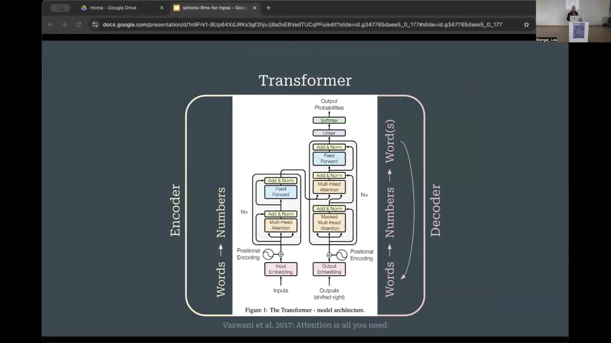

3 Large Language Models in History, Philosophy, and Sociology of Science: A Primer and Critical Reflections
Overview
This presentation systematically introduces the foundational architecture of large language models (LLMs), details their evolution and adaptation for scientific domains, and explores their burgeoning applications within the history, philosophy, and sociology of science (HPSS). Initially, the speaker, a co-organiser, provides a primer on the seminal Transformer architecture, explaining its encoder-decoder structure and its original purpose in language translation. Subsequently, the discussion differentiates between encoder-based models, such as BERT, which offer bidirectional full-context understanding, and decoder-based generative models, including GPT, capable of producing novel text.
The presentation then charts the proliferation of domain-specific LLMs across various scientific fields, outlining diverse adaptation strategies. These include pre-training, fine-tuning, and the sophisticated Retrieval Augmented Generation (RAG) pipeline. Crucially, the speaker categorises current LLM applications in HPSS, spanning data handling, knowledge structure analysis, and the study of knowledge dynamics and practices. Finally, the presentation offers critical reflections on HPSS-specific challenges, such as historical language evolution and sparse data, whilst advocating for enhanced LLM literacy and a steadfast adherence to HPSS methodologies. This approach highlights new opportunities for bridging qualitative and quantitative research.
3.1 The Foundational Transformer Architecture

This presentation offers a foundational primer on large language models (LLMs), detailing their adaptation for scientific domains and summarising their current applications within the history, philosophy, and sociology of science (HPSS). Furthermore, it shares critical reflections intended to stimulate discussion throughout the workshop. Addressing a heterogeneous audience with diverse technical backgrounds, the speaker aims to ensure accessibility whilst maintaining scholarly rigour.
At the core of all contemporary large language models lies the seminal Transformer architecture, pioneered by Vaswani and colleagues in 2017. The engineers originally designed this model for language translation, facilitating conversions such as German to English. The architecture comprises two interconnected processing streams: an encoder on the left and a decoder on the right.
The encoder processes an entire input sentence concurrently. Within this stream, each word interacts bidirectionally with every other word, thereby constructing a comprehensive contextual representation of the complete sentence meaning. Conversely, the decoder generates output words sequentially. Crucially, whilst predicting the next word, the decoder can only access its predecessors, operating with a unidirectional context. Throughout both streams, internal layers progressively refine contextualised word embeddings, enhancing their semantic richness.
3.2 Differentiating BERT and GPT Models

Immediately following the Transformer’s introduction, researchers began re-engineering its individual streams to produce sophisticated pre-trained language models. This development ushered in a new domain of application, moving beyond mere translation to models capable of profound language understanding and generation, readily adaptable for various natural language processing (NLP) tasks with minimal additional training.
From the encoder side, the BERT family of models emerged, standing for Bidirectional Encoder Representations from Transformers. BERT operates by allowing each word in the input stream to access the full context bidirectionally, thereby constructing a comprehensive understanding of the entire input at once. Conversely, the decoder side gave rise to the GPT models, or Generative Pre-trained Transformers, which now power applications like ChatGPT. These models, whilst constrained to accessing only their predecessors, possess the distinct capability to generate novel text, a function not inherently present in BERT-like models.
Consequently, a fundamental distinction arises between these two model types: generative models, exemplified by GPT, primarily produce language, whereas full-context models, such as BERT, excel at coherently understanding sentences. Beyond these primary distinctions, engineers have also crafted models that combine encoder and decoder functionalities, or have devised advanced methods for utilising decoders in an encoder-like fashion, as seen in architectures like XLM and XLNet.
3.3 Scientific LLM Evolution and Adaptation Strategies

A comprehensive overview reveals the rapid evolution of large language models, particularly those tailored for specific science domains and tasks, spanning from 2018 to 2024. This landscape encompasses models categorised as Encoder-Decoder, Decoders, and Encoders, available as both open-source and closed-source solutions. Notably, encoder models, akin to BERT, exhibit a greater prevalence than their decoder counterparts. Early popular models in this scientific context included BioBERT, Specter, and SciBERT. Currently, a diverse array of domain-specific models serves fields such as biomedicine, chemistry, material science, climate science, mathematics, physics, and social science.
Researchers employ several methods to adapt these models to specific scientific language. Pre-training constitutes the initial phase, where a model learns language by predicting the next token, as in GPT models, or by predicting randomly masked words, characteristic of BERT models. This process, however, demands immense computational resources and vast datasets, rendering full-scale pre-training impractical for many. Consequently, continued pre-training offers a viable alternative; researchers utilise an already pre-trained model, subsequently training it on domain-specific language, such as adapting a BERT model for physics texts.
Beyond this, engineers can add extra layers atop pre-trained models, effectively training them for classification tasks like sentiment analysis or named entity recognition. Crucially, contrastive learning emerges as a pivotal method for generating sentence and document embeddings. Whilst word embeddings are readily available, the challenge lies in placing entire documents or sentences within the same embedding space. Contrastive learning addresses this, with Sentence BERT serving as a widely adopted example.
3.4 Retrieval Augmented Generation and Key Distinctions

Retrieval Augmented Generation (RAG) represents a sophisticated pipeline system, fundamentally distinct from a singular large language model, as it orchestrates multiple models in concert. This architecture, for instance, underpins ChatGPT’s internet search capabilities. The process commences with a user query, such as “What are LLMs?”. Subsequently, a BERT-type model encodes this query into a sentence embedding. This embedding then facilitates a search within a comprehensive document database, identifying the most semantically similar passages. Finally, the RAG pipeline seamlessly integrates these retrieved sentences into the prompt of a generative model, which then formulates an answer based on this newly enriched context.
Beyond RAG, advanced reasoning models and agents are emerging; these are not isolated LLMs but rather intricate systems that combine LLMs with a diverse array of other tools. Consequently, a clear understanding of key distinctions proves crucial for navigating the LLM landscape. These include the fundamental architectural differences, such as encoder-based, decoder-based, and encoder-decoder-based designs, alongside various fine-tuning strategies. Moreover, one must differentiate between word embeddings and sentence embeddings, as these represent fundamentally distinct levels of abstraction. Ultimately, discerning between standalone LLMs, complex pipelines like RAG, and sophisticated agents becomes paramount for effective application.
3.5 Applications and Trends in HPSS Research

A current survey explores the burgeoning uses of large language models as tools within history, philosophy, and sociology of science (HPSS) research. This investigation has identified four primary categories for sorting these applications:
LLMs assist in dealing with data and sources, facilitating the parsing and extraction of information such as publication types, acknowledgements, and citations.
They contribute to analysing knowledge structures, enabling entity extraction for scientific instruments, celestial bodies, and chemicals, alongside mapping science policy discourses and interdisciplinary fields.
LLMs illuminate knowledge dynamics, particularly through the study of conceptual histories of words.
Finally, they support the analysis of knowledge practices, including citation context analysis—an older HPSS tradition now also employed for evaluatory purposes.
A notable trend indicates an accelerating interest in LLMs, with findings predominantly appearing in information science journals like Scientometrics and Jasis. Increasingly, however, papers featuring LLM applications are emerging in journals traditionally less inclined towards computational methods. This expansion suggests that the semantic power of these models now attracts qualitative researchers and philosophers. Furthermore, the degree of customisation in LLM deployment varies widely, spanning from straightforward off-the-shelf use of ChatGPT to the development of entirely new model architectures.
Despite this enthusiasm, several concerns recur. Researchers frequently cite overwhelming computational resource requirements, the inherent opaqueness of models, and persistent shortages of training data and benchmarks. Moreover, they grapple with trade-offs between different model types, acknowledging that no single model serves all purposes; rather, its adequacy depends entirely on the specific research objective. Nevertheless, a positive trend towards greater accessibility is evident, exemplified by BERTopic, a topic modelling tool gaining widespread adoption due to its user-friendliness and robust developer maintenance.
3.6 Critical Reflections and Future Directions for HPSS

Crucially, scholars must acknowledge the specific challenges inherent to HPSS when engaging with large language models. Foremost amongst these is the historical evolution of concepts and language; models trained predominantly on modern language may exhibit inherent biases, necessitating either the training of custom models or the judicious use of existing ones with a keen awareness of their limitations. Furthermore, HPSS adopts a reconstructive and critically reflective perspective, reading between the lines of scientific texts to understand authorial context and subtle discursive strategies, such as boundary work. Current models are not inherently trained for such nuanced interpretation, demanding the development of methods that enable this distinctive HPSS “reading.” Practical data problems also persist, including sparse datasets, the prevalence of multiple languages, and the complexities of old scripts.
Consequently, building robust LLM literacy becomes imperative. Researchers must thoroughly understand these tools, encompassing both their underlying theory and their practical implications. Whilst the necessity for extensive coding in natural language processing may diminish over time, a foundational understanding remains vital. This literacy prevents the superficial application of off-the-shelf tools, which, whilst producing visually appealing graphs, often yield no deeper insight.
Ultimately, HPSS researchers must remain true to their established methodologies. This involves translating complex HPSS problems into specific NLP tasks—such as classification, generation, or summarisation—without inadvertently compromising the original research purpose. Nevertheless, these advancements present novel opportunities for bridging qualitative and quantitative approaches within the discipline. Moreover, reflecting upon HPSS’s own history and the pre-history of these models, including pioneering efforts like co-word analysis developed by figures such as Callon and Rip in the 1980s, offers valuable theoretical grounding, particularly given the resonance of Actor-Network Theory (ANT) concepts with contemporary LLM developments.